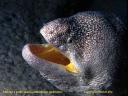

Listen to "The Moray" in English

LA MURENE (de "In Memoriam" par Michel Galiana)
Sous les remparts -éclair- cingle la murène,
Beau corps bruni par le sel et le soleil.
Est-ce au soleil faute si je te mus reine
Ou d'un appel à quelque fièvre pareil.
Le boucanier pillait où fut la murène
De ses fortins escalader les redans.
Mais quel piton pour jeter bas ce mur haine,
Planter la langue au blanc massif de ces dents?
A pris l'oubli la cité de la murène.
La vase bat sous la garde des canons.
Au pic brandi tournoie un chef, hure haine,
Pour remplacer mes bannières et pennons.
Michel Galiana (c) 2006
THE MORAY (from "In Memoriam" by Michel Galiana)
Under the old fort's walls flashes past the moray.
Its fair body is tanned by the salt and the sun.
Did sun light upset you where reaches no more ray
Or some fit of fever prompt you to this rash run?
Buccaneers once looted there where dwelt the moray.
One might the craggy cliffs climb up to their fortress.
But to sap walls of hate who would go on foray,
With a kiss force open this white enamelled mass?
Oblivion now covers the realm of the moray
And mere silt ebbs and flows watched by rusty bombards.
A skull on a pale in no mood for amore
Challenges my banners, my flags and my standards.
Transl. Christian Souchon 01.10.2006
Background: Bernard Le Guevel 01.02.2014
(c) (r) All rights reserved
|
Il existe plus de 100 espèces de murènes. Ces poissons vivent dans les récifs de corail ou dans les zones rocheuses des mers chaudes peu profondes. Ces poissons nocturnes (cest la nuit quils sont le plus actifs) se rencontrent souvent sortant la tête de dessous les rochers ou dune crevasse ou dans les mares des laisses de haute mer. Classification: Classe des Ostéichtyens (poisons à arête dorsale), sous-classe des Actinoptérygiens (poissons à nageoires rayées), ordre des Anguilliformes (anguilles), famille des Murénidés (murènes), nombreux genres et espèces. Anatomie: Les murènes ont une peau sans écailles, épaisse, lisse et constituant en général un camouflage. Si les yeux sont minuscules (très mauvaise vision), la gueule est large et pourvue de solides dents tranchantes comme des rasoirs et susceptibles dinfliger des morsures graves , y compris à lhomme, pouvant entraîner des saignements ou des troubles musculaires profonds. Les murènes ont des ouies circulaires de part et dautre de la tête. La plupart sont dépourvues de nageoires pectorales. La nageoire dorsale court sur presque toute la longueur du dos jusquà rejoindre la nageoire caudale et se prolonge par la nageoire anale qui couvre, quant à elle, le ventre de lanimal. La murène a en moyenne une longueur de 1,5 m. La plus grande murène est le Thyrsoidea macrurus de locéan Pacifique qui peut atteindre une longueur de 3.5 m. Prédateurs: Les prédateurs de la murène sont peu nombreux. Les grands bars et certaines murènes parfois sattaquent à elle. Certaines espèces sont pêchées pour leur chair, tandis que dautres sont toxiques, leur consommation pouvant même entraîner la mort. |
There are 100 species of moray eels or more. These fish enjoy rocky areas or coral reefs of shallow warm seas worldwide. These nocturnal (most active at night) fish are often found just hanging out under rocks, in crevices or tidepool ledges. Classification: Class Osteichthyes (bony fish), Subclass Actinopterygii (ray-finned fish), Order Anguilliformes (eels), Family Muraenidae (moray eels), many genera and species. Anatomy: Their skin is scaleless, thick, smooth and usually camouflaged. If their eyes are tiny (bad vision), their mouth is wide and fitted with strong razor sharp teeth, which may inflict serious wounds on their enemies (including humans) which can result in bleeding and severe muscle damage. Morays have a small, circular gill openings on each side of the head. Most morays are lacking pectoral fins; the dorsal fin runs along most of the back to the tail and into the anal fin, which runs along the underside of the body. Morays usually dont exceed a length of 5 feet (1.5 m) long but one species, the Thyrsoidea macrurus of the Pacific Ocean, grows to about 3.5 m (11.5 feet) long. Predators: Except large groupers and, sometimes, other moray eels, morays have few predators. Morays are eaten sometimes, but their flesh is often toxic and may cause sickness if not death. |